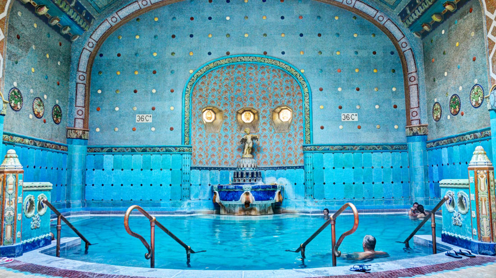

| Hungría | |
|---|---|
|  | Hungría (en húngaro: Magyarország) es un país sin litoral de Europa Central. Está situado en la llanura panónica y tiene fronteras con Eslovaquia por el norte, con Ucrania y Rumanía por el este, con Serbia y Croacia por el sur, con Eslovenia por el suroeste y con Austria por el oeste. Su capital y mayor ciudad es Budapest. Hungría es un estado miembro de la Unión Europea, de la OTAN, de la OCDE, del Grupo de Visegrád y del Acuerdo de Schengen. Su idioma oficial es el húngaro, también conocido como magiar, que pertenece al grupo ugrofinés y que además es la lengua no indoeuropea con más hablantes de toda Europa. |
| Ubicación | |
|---|---|
|
|
Budapest adquirió el título de Ciudad de los Balnearios (o ciudad balnearia) en 1934, y es que la ciudad dispone de 118 manantiales, tanto naturales como artificiales, desde los que cada día brotan más de 70 millones de litros de agua termal a temperaturas de entre 20 y 80ºC. Las aguas termales adquirieron protagonismo a principios del siglo XX para tratar enfermedades, pero los baños de Budapest han estado en activo desde la época de la dominación romana. Durante la época turca, entre 1541 y 1686, también se construyeron importantes balnearios, muchos de los cuales perduran hoy en día. Antes de visitar un balneario deberéis fijaros en si las piscinas son mixtas, ya que la mayoría de ellos reservan unos días para el público masculino y otros para el femenino.